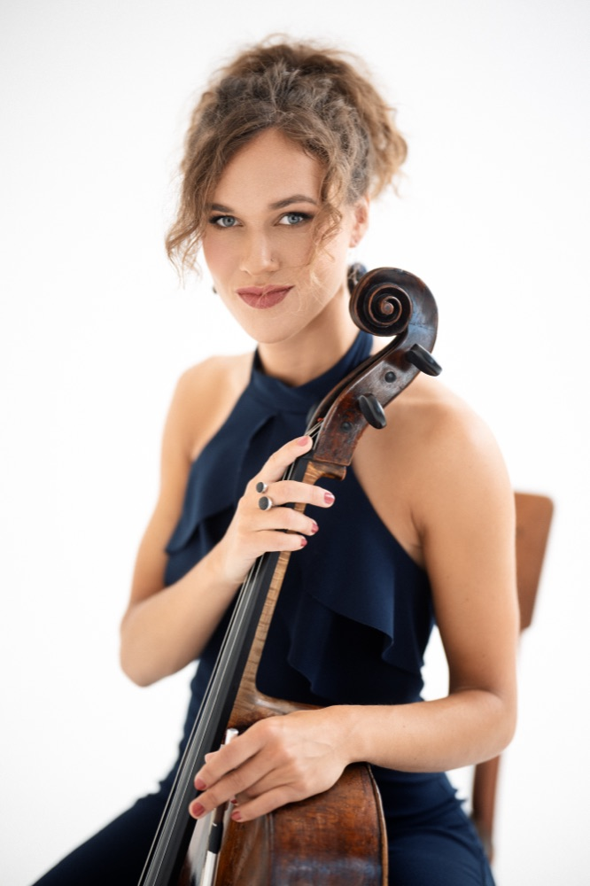

Elena Daunytė
violončelininkė ir vokalistė
Lietuvos violončelininkė ir vokalistė, garsinanti šalies vardą Europoje ir toliau — tarptautinių konkursų laureatė ir Grand Prix laimėtoja, ansamblio „Regnum Musicale“ narė ir muzikė, kurioje klasika susitinka su improvizacija.

Muzika kaip kelionė, ne tikslas
Elena Daunytė — daugelio tarptautinių konkursų laureatė bei Grand Prix laimėtoja, Čiurlionio kvarteto ir šeimos ansamblio „Regnum Musicale“ narė. Kaip solistė ir kamerinės muzikos atlikėja ji yra pasirodžiusi konkursuose, festivaliuose ir meistriškumo kursuose, kurių geografija driekiasi nuo Latvijos, Vokietijos, Šveicarijos, Kroatijos, Rusijos, Austrijos, Olandijos, Italijos, Ispanijos, Vengrijos ir Didžiosios Britanijos iki Honkongo, Šanchajaus bei JAV.
Kaip solistė ji yra grojusi su Lietuvos kameriniu, Lietuvos nacionaliniu, Lietuvos valstybiniu, Rygos, Kauno, Lietuvos muzikos ir teatro akademijos bei Karališkojo muzikos koledžo ir Halifakso simfoniniais orkestrais, diriguojant maestro Andrzej Kosendiakui, Jonathanui Bermanui, Modestui Pitrėnui, Sergejui Krylovui, Sauliui Sondeckiui, Vilmantui Kaliūnui, Martynui Staškui, Nicholasui Simpsonui ir Clarkui Rundellui.
Ji reguliariai kviečiama atlikti solines violončelės partijas „Vilniaus“ bei „Gaidos“ festivaliuose kartu su Lietuvos kameriniu ir Lietuvos nacionaliniu simfoniniu orkestrais, o savo meno kelyje sulaukė S. Karoso fondo, Muzikų rėmimo fondo, „Rotary International“, Perkūno bei Vilniaus Rotary klubų paramos ir bendradarbiauja su Lietuvos kultūros taryba.
Jau keletą metų Elena taip pat semiasi vokalo pagrindų pas profesorių Vladimirą Prudnikovą ir į savo koncertų programas įtraukia balsui skirtus opusus. Ji eksperimentuoja jungdama violončelės ir vokalo muziką, ieškodama naujų dermių bei galimybių šių dviejų instrumentų sintezei.
„Svarbiausia — augimas ir maksimalus džiaugsmas iš paties tobulėjimo proceso.“
Studijos ir tobulėjimas
-
M. K. Čiurlionio menų mokykla
Muzikinio ugdymo pradžia — pamatas, ant kurio užaugo tarptautinė karjera.
-
Royal Northern College of Music
Studijos vienoje pripažintiausių Europos muzikos akademijų.
-
Lietuvos muzikos ir teatro akademija
Aukščiausio lygio violončelės studijos Vilniuje, aktyviai atstovaujant akademijai nacionaliniuose ir tarptautiniuose renginiuose.
-
Meistriškumo kursai
Nuolatinis tobulėjimas šalia pasaulinio garso violončelininkų.
Solo pasirodymai
C. P. E. Bach — Violončelės koncertas A-dur, Wq. 172 · violončelė Elena Daunytė · Lietuvos kamerinis orkestras · dirigentas Andrzej Kosendiak (Lenkija) · Lietuvos nacionalinė filharmonija
Violončelė — Elena Daunytė · Lietuvos nacionalinis simfoninis orkestras · dirigentas Jonathan Berman (Didžioji Britanija)
Ansambliai ir bendradarbystė
Regnum Musicale
Šeimos ansamblis, sukurtas kartu su seserimis ir pavadintas tėvo įkurtos kultūrinės organizacijos vardu — bendra emocija ir jausmo skrydis scenoje.
„Vilniaus“ ir „Gaidos“ festivaliai
Reguliariai kviečiama atlikti solines violončelės partijas kartu su Lietuvos kameriniu ir Lietuvos nacionaliniu simfoniniu orkestrais.
Čiurlionio kvartetas
Kamerinės muzikos bendrystė, jungianti klasikinį repertuarą su gilia tarpusavio muzikine chemija.
Apdovanojimai ir padėkos
Elena yra daugelio tarptautinių konkursų laureatė ir Grand Prix laimėtoja. Už aktyvią koncertinę ir konkursinę veiklą bei Lietuvos vardo garsinimą užsienyje ji ne kartą yra gavusi Lietuvos Respublikos prezidentų padėkas, o už muzikinius pasiekimus apdovanota Karalienės Mortos premija.
- Grand Prix tarptautiniuose violončelės konkursuose
- Prezidento Valdo Adamkaus padėka už Lietuvos vardo garsinimą pasaulyje
- Prezidentės Dalios Grybauskaitės padėka už aktyvią meninę veiklą
- Karalienės Mortos premija už muzikinius pasiekimus
- Daugelio tarptautinių violončelės konkursų laureatė
Susisiekime
Koncertai, bendri projektai ar žiniasklaidos užklausos — visada laukiu žinutės.